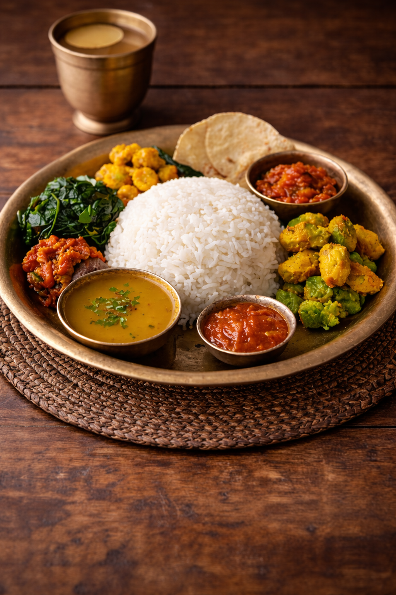

Daal Bhaat

Daal Bhaat is a traditional Nepali meal made of steamed rice served with lentil soup called daal. It is usually eaten with side dishes like vegetable curry, pickles, and leafy greens. This nutritious and filling meal is the most common daily food in Nepal.
Ingredients
- Rice
- Lentils (Daal)
- Potatoes
- Mixed vegetables
- Leafy greens
- Garlic
- Ginger
- Turmeric
- Cumin
- Salt
- Oil
- Pickle (Achar)
Steps
- Wash the rice and cook it in water until soft.
- Boil lentils with turmeric, salt, garlic, and ginger.
- Prepare vegetable curry using potatoes and mixed vegetables.
- Heat oil in a pan and add cumin to temper the daal.
- Serve the rice with daal, vegetables, and pickle.
Home